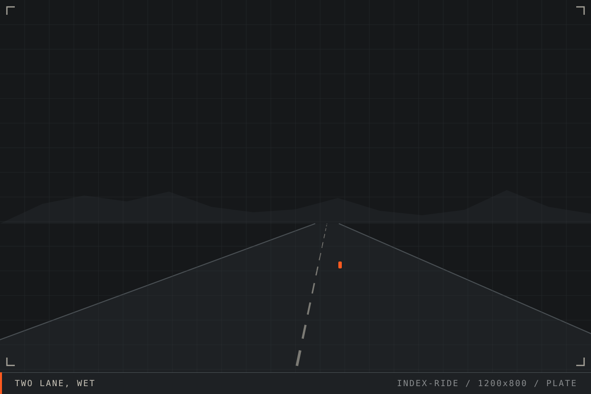
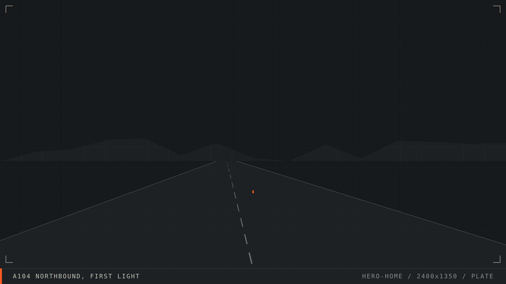
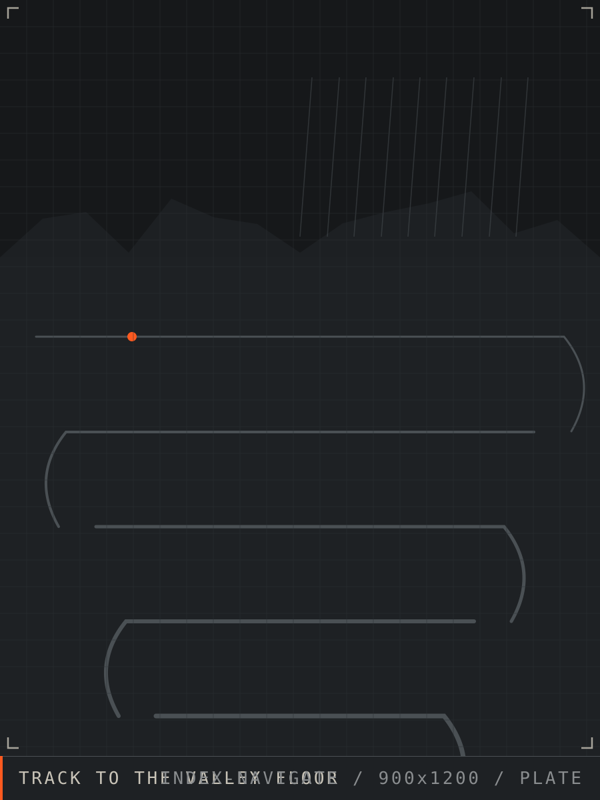
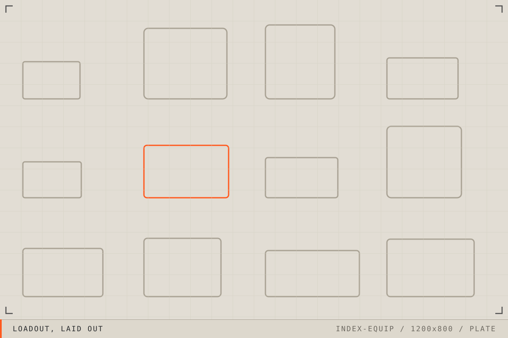
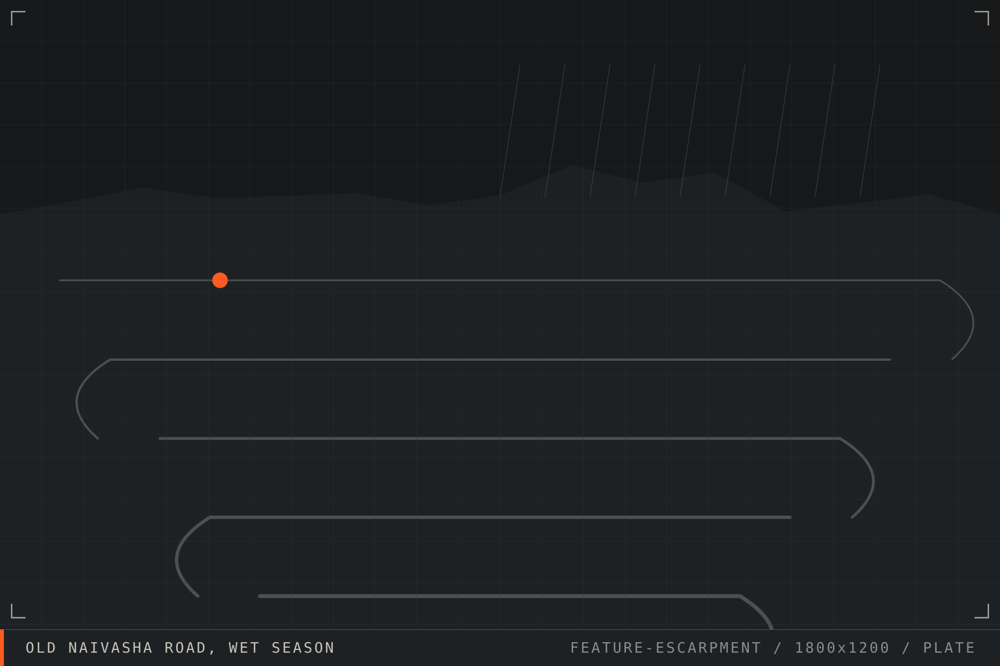
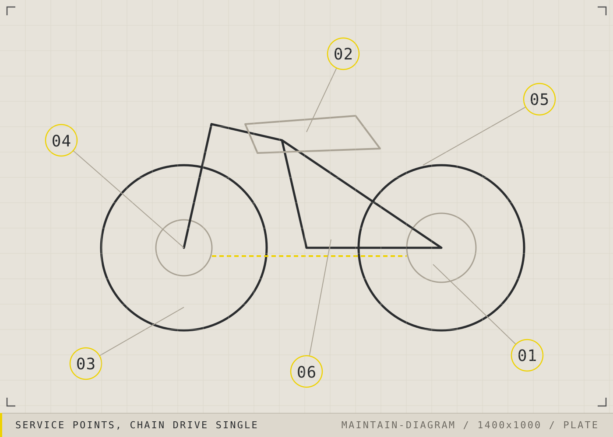

01
Ride
Road safety, riding technique, awareness.
Matatu behaviour, blind overtakes, night glare, wet murram. The habits that decide whether a route is survivable.
OpenGuides18

01 Frontier
Motorcycle knowledge, equipment and support for riders across East Africa.
Everything on this site sits under one of six headings. They are ordered the way a ride is: what you do on the road, where you are going, what happens when it goes wrong, and how the machine is kept alive in between.

01
Road safety, riding technique, awareness.
Matatu behaviour, blind overtakes, night glare, wet murram. The habits that decide whether a route is survivable.

02
Routes, maps, fuel, weather, terrain.
Distances that are real, fuel gaps that are honest, and where the tarmac ends.
03
Breakdowns, preparedness, roadside resilience.
What to carry, what to do first, and how to stay safe on a shoulder at dusk.
04
Service, diagnostics, workshop knowledge.
Intervals adjusted for dust, load and fuel quality rather than a European service book.

05
Gear, loadout, buying guidance.
Helmets, wet weather gear, luggage and tyres, judged against heat, dust and price.
06
Help when the ride stops.
Where to start when the bike will not move and you are a long way from anyone.

Field 014
Route feature Old Naivasha Road, Kenya 11 AUG 2026
Ninety kilometres from Nairobi to Naivasha on the old road, and why the descent is the only part that matters.
The old escarpment road is shorter, quieter and more interesting than the highway. In April it is also the reason riders end up in the ditch at the third hairpin. Here is how the surface actually behaves once the rain starts.
Read the story
Five lists worth running before a long day. None of this is equipment you need to buy. Most of it is ten minutes and a decision made while you are still somewhere you can act on it.
Two minutes, cold, before the engine starts. In this order because each step tells you whether the next one matters.
Judged the night before, then again at the door. A route that is fine in the dry may be a different route entirely.
The set that earns its space on almost any route. Everything else is route specific.
Plan around the single longest gap on the route, not the average distance between stations.
Prepared before the ride, because none of it is possible to arrange afterwards.
Boxes are printed marks, not controls. Nothing here is stored or tracked.

Service books assume clean fuel, sealed roads and mild dust. Adjust the intervals for how the machine is actually used, or it will adjust them for you at the least convenient point on the route.
Full intervals for tarmac and murram, with the reasoning for each, are in the Maintain section.
Frontier Moto does not sell equipment and takes no commission. Items appear here because they were used on a route or inspected in person. Where we have not tested something, it is marked untested.
EQ-01Head
Ventilation matters more than weight at equatorial midday. A quiet helmet that cooks you is the wrong helmet.
Field tested
EQ-02Wet weather
Survives a full season if the seams are taped and it goes over armour rather than under it. Packs smaller than a one piece.
Field tested
EQ-03Luggage
Cheaper, lighter and more waterproof than hard cases, and it does not change the width of the bike in traffic.
Field tested
EQ-04Tyres
For riders who meet murram occasionally rather than daily. A knobbly tyre used mostly on tarmac is a braking problem.
Field tested
A plain reading of current requirements for riders and pillions, with the parts that remain unclear marked as unclear.
5 min read
The signals that come three seconds before a sudden stop, and the following distance that makes them useful.
6 min read
Position, visibility, then the machine. In that order, every time.
5 min read
The order to check things in, so that a fault ends the inspection before you waste an hour.
10 min read
Where the tarmac holds, where it does not, and the last certain fuel before the northern stretch.
6 min read
Reported by riders, updated when we can confirm it, dated so you can judge how stale it is.
4 min read